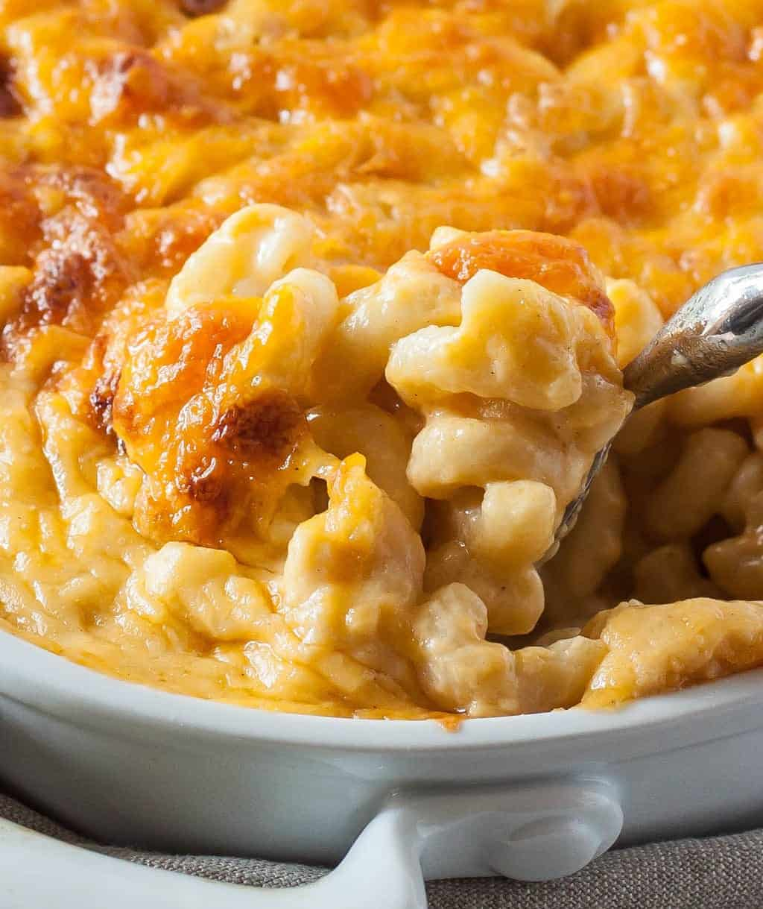

Macaroni and Cheese

Description
This succulent, cheesy, delicious macaroni and cheese is perfect for any occasion or gathering.
With only a few ingredients and some of your favorite cheeses, you can craft a meal that all your friends
and family will enjoy.
Ingredients
- 2 cans of evaporated whole milk
- 2 eggs, beaten
- 2 sticks of salted or unsalted butter
- 12 - 16 oz. of macaroni elbows
- 1 bag of shredded mild cheddar cheese
- 1 bag of shredded mozzarella cheese
- 2 - 3 bags of whatever other cheese you like
Steps
- Boil your macaroni elbows until tender then drain
- Add butter to macaroni and stir
- Add 1/2 of all your cheese to macaroni, stir
- Add 1 can of evaporated milk, stir
- Add remaining cheese, stir
- Add other can of evaporated milk, stir
- Add both beaten eggs, stir
- When combined, spray baking pan with PAM and add mixture to it
- Bake for approx. 45 minutes to 1 hour at 375 degrees
Return Home